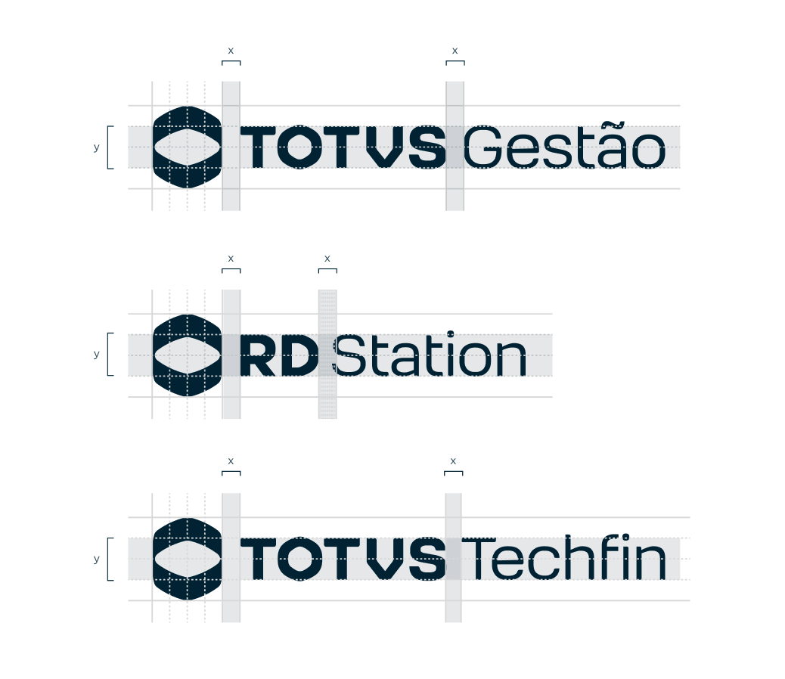

Submarcas
Grid construtivo
Cada lockup de submarca segue uma relação construtiva que garante o espaçamento e as proporções corretas entre símbolo, logotipo e o nome da unidade — definidos pelas medidas x (espaçamento) e y (altura).
Cada lockup de submarca segue uma relação construtiva que garante o espaçamento e as proporções corretas entre símbolo, logotipo e o nome da unidade — definidos pelas medidas x (espaçamento) e y (altura).
